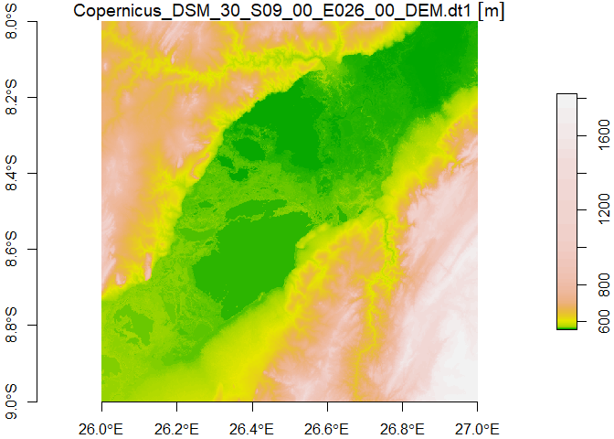
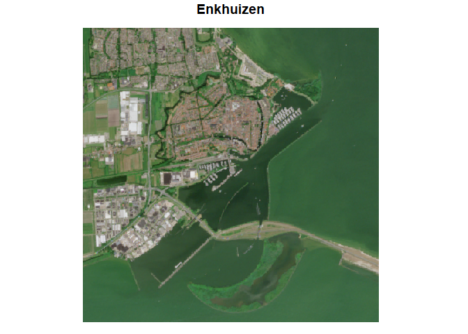

The Copernicus Data Space Ecosystem, is an open ecosystem that provides free instant access to a wide range of data and services from the Copernicus Sentinel missions and more on our planet’s land, oceans and atmosphere. This package provides entry points to several APIs allowing users to access the data directly in R.
Installation
At the moment, the package is still only experimental. It can therefore only be installed from GitHub:
remotes::install_github("pepijn-devries/CopernicusDataspace")Introduction
The Copernicus Data Space Ecosystem offers access to its services through several APIs. This package offers access via the following APIs:
- OData;
- STAC; and
- SentinelHub.
This README shows only essential methods for downloading data. For more detailed information consult the respective vignettes:
Authentication
When actually downloading files from the Copernicus Data Space Ecosystem, you usually need some form of authentication. Examples below use credentials stored as environment variables. For more information about how to effectively authenticate download requests, please see vignette("Authentication").
Downloading Using STAC Catalogue
When you know the STAC identifier (asset_id) and the asset name you wish to download, you can simply use the example shown below. It will often speed you request up if you include the collection id. When you don’t know these details, you should first explore the catalogue. Please see vignette("STAC") for more details on working with the STAC catalogue.
library(CopernicusDataspace)
library(stars) ## For reading and plotting the downloaded file
## Only run this if an S3 secret is specified:
if (dse_has_s3_secret()) {
filename <- dse_stac_download(
asset_id = "Copernicus_DSM_COG_30_S69_00_W062_00_DEM",
asset = "data",
collection = "cop-dem-glo-90-dged-cog",
tempdir())
tile_stac <- read_stars(filename)
plot(tile_stac, col = hcl.colors(100), axes = TRUE)
}
This produces a tile in the Southern Ocean near Antarctica.
Downloading Using OData API
## Only run this if client info is available:
if (dse_has_client_info()) {
response <-
dse_odata_download_path(
product = "2f497806-0101-5eea-83fa-c8f68bc56b0c",
node_path = paste(
"DEM1_SAR_DTE_90_20101213T034716_20130408T035028_ADS_000000_5033.DEM",
"Copernicus_DSM_30_S09_00_E026_00", "DEM",
"Copernicus_DSM_30_S09_00_E026_00_DEM.dt1", sep = "/"),
destination = tempdir())
tile_odata <- read_stars(response$body)
plot(tile_odata, col = terrain.colors(100), axes = TRUE)
}
This produces a map of Lake Upemba in Congo.
TODO
Downloading Using SentinelHub
TODO
## Only run this if client info is available:
if (dse_has_client_info()) {
bounds <- c(5.261, 52.680, 5.319, 52.715)
## prepare input data
input <-
dse_sh_prepare_input(
bounds = bounds,
time_range = c("2025-06-01 UTC", "2025-07-01 UTC")
)
## prepare ouput format
output <- dse_sh_prepare_output(bbox = bounds)
## retrieve processing script
evalscript <- dse_sh_get_custom_script("/sentinel-2/l2a_optimized/")
fl <- tempfile(fileext = ".tiff")
## send request and download result:
dse_sh_process(input, output, evalscript, fl)
enkhuizen <- read_stars(fl) |> suppressWarnings()
plot(enkhuizen, rgb = 1:3, main = "Enkhuizen")
}
More of Copernicus
More R packages for exploring other Copernicus data services:
- CopernicusClimate Dedicated to climate change datasets
- CopernicusMarine Dedicated to marine datasets
Code of Conduct
Please note that the CopernicusDataspace project is released with a Contributor Code of Conduct. By contributing to this project, you agree to abide by its terms.